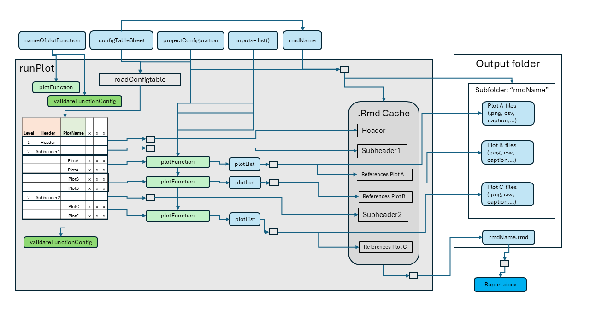
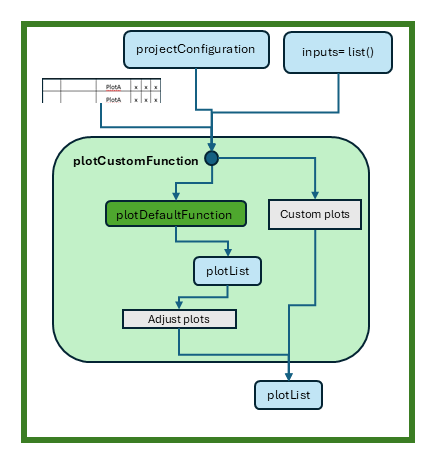

Plot_and_Report_Generation
Plot_and_Report_Generation.RmdIntroduction
The ospsuite.reportingframework package is designed to
streamline the process of generating plots and reports for users in
their daily work. It provides a robust set of tools that facilitate the
rapid creation of figures and comprehensive reports, allowing users to
efficiently visualize and summarize data.
With this package, users can easily generate a variety of plots, all
of which are customizable to meet specific needs. The resulting plots
are returned as ggplot objects, enabling further
manipulation and refinement. Additionally, the package includes an
intuitive interface for customizing plots generated by default functions
or for integrating entirely new plotting functions.
This vignette will guide you through the key functionalities of the package, including configuration, plot generation, and report creation, ensuring you can leverage its full potential in your analytical workflows.
Content
This vignette covers the following key topics:
Configuration Table: An overview of the structure and purpose of the configuration table used for plot generation. This section explains the various sheets involved, their roles, and how to properly set them up for the
runPlotfunction.Plot Generation with
runPlotfor Reporting: A detailed explanation of how to use therunPlotfunction, including its parameters, the steps it performs, and an illustrative example. This section aims to provide users with a clear understanding of how to generate plots efficiently within their reporting workflows.Suppressing Export of Plots: This section describes the optional feature of suppressing output during the plot generation process, allowing users to quickly visualize plots without writing them to the file system. It also covers how to filter plots of interest for quicker development.
Available Plot Functions: An overview of the various plot functions provided by the package, including their names and descriptions. This section serves as a reference for users to understand the capabilities of the package and to identify which functions to use for their specific needs.
Creating Custom Plot Functions: Guidance on how to create custom plot functions tailored to specific analytical requirements. This section discusses the use of templates and the integration of custom functions within the existing reporting framework.
Report Generation: Instructions on how to compile generated plots into a comprehensive report using the
mergeRmdsfunction to combine multiple.Rmdfiles into a single document. This section also details how to convert R Markdown files into Word documents using therenderWordfunction, highlighting key parameters and providing examples for both functions.
Configuration Table
The configuration for plot generation is managed through the
projectConfiguration$plotsFile, which consists of several
sheets for general configurations that should not be renamed:
-
Scenarios: Configures the display names of scenarios in all plot functions. -
Outputs: Configures the display names and units of outputs in all plot functions. -
DataGroups: Configures the display names of data groups in all plot functions and links data groups to scenarios. -
ModelParameter: Defines a list of model parameters that can be used in some plots. -
TimeRange: Lists possible time ranges for time profile plots.
In addition to these general configuration sheets, there are
templates for plot configurations that can be copied and renamed. The
sheet name serves as an input to the runPlot function.
All sheets must contain the columns ‘Level’, ‘Header’, and
‘PlotName’. In each row, either the ‘Level’ and ‘Header’ columns should
be filled to generate a structure of headers in the markdown document,
or the ‘PlotName’ should be filled to group rows for evaluation by the
runPlot function. The other columns are specific to the
respective plot function, with the second row in each sheet providing
guidance on how to use them.
Plot Generation with runPlot for Reporting
The runPlot function is the primary interface for
generating plots within the workflow. It requires the following
mandatory parameters:
-
nameOfplotFunction: The name of the plot function to execute. -
projectConfiguration: The configuration object containing project settings and paths. -
inputs: A list of additional inputs required by the specific plot function.
The runPlot function executes several steps to generate
the plots:
- Evaluates
nameOfplotFunctionto check for its availability. - Checks if a validation function for the plot configuration table is available; if not, the default validation function is used.
- Creates a subfolder in the
projectConfiguration$outputFolder, named according to the input variablermdName, which defaults to the config table sheet name. - Reads and validates the configuration table defined by
configTableSheet. - Iterates over the rows of the configuration table:
- If the ‘Level’ and ‘Header’ columns are filled, a header is created in the Rmd cache.
- If the ‘PlotName’ is filled, all rows with the same plot name are filtered, and this sub-table serves as input for the plot function. The return value is a list of ggplot objects or tables, which are exported to the subfolder ‘rmdName’, with references made in the Rmd cache.
- Finally, the Rmd cache is written as a markdown document to the
projectConfiguration$outputFolder, named<rmdName>.Rmd, which can be used for report generation.
Refer to the function help for additional details on
runPlot.

Example Call
Below is an example call to create time profiles using the
plotTimeProfiles function. The configuration sheet in this
example is called “myTimeProfile”, and projectConfiguration
serves as the configuration object containing project settings and
paths. The list inputs includes input parameters specific
to the plotTimeProfiles function, which requires a list of
scenarioResults and optionally takes
dataObserved for plotting.
Suppressing Export of Plots
The runPlot function includes an optional input variable
suppressExport (default is FALSE). When set to
TRUE, all actions that produce output on the file system
are suppressed, meaning no plot exports or Rmd files are created.
Instead, runPlot returns the plot list as a list.
Additionally, the plotNames input allows you to select
specific plots defined in your input configuration. If this variable is
set, runPlot will automatically set
suppressExport to TRUE and filter the plot
configuration to the plots of interest. This mode is particularly useful
during the development of plots, as it allows for quick results in the
form of ggplot objects that can be easily visualized and modified.
Plot Functions
Available Plot Functions
The table below provides an overview of all plot functions available
in this package. For further information, please refer to the respective
function help and the vignettes titled
Tutorial Time Profiles and
PKParameter_Boxplot.
| Template sheet | Function name | Description |
|---|---|---|
| TimeProfiles | plotTimeProfiles | Create time profile plots |
| PKParameter_Boxplot | plotPKBoxwhisker | Creates box-whisker plots of PK parameters |
| PKParameter_Forest | plotPKForestAggregatedAbsoluteValues plotPKForestPointEstimateOfAbsoluteValues plotPKForestAggregatedRatios plotPKForestPointEstimateOfRatios | Creates forest plots of PK parameters |
| Histograms | plotHistograms | Creates histograms of PK parameters or population parameters |
| DistributionVsRange | plotDistributionVsDemographics | Creates range plots of PK parameters or population parameters versus a population parameter |
| SensitivityPlots | plotSensitivity | Creates plots to display the results of the sensitivity analysis. |
Creating Custom Plot Functions
Custom plot functions enable the generation of specific
visualizations tailored to your analytical needs. To assist in creating
these custom functions, you can open a template using the RStudio
Addins. Simply navigate to the Addins menu in RStudio and select “Open
Template Plot Function.” Alternatively, you can use the following
function to open the template directly
openFigureTemplate().
This will provide you with a pre-structured and well documented template to help you get started with your custom plot function.
The runPlot function will generate the inputs
projectConfiguration, onePlotConfig, and all
inputs defined in the inputList. With this input, you can
generate your own code, either by calling an available plot function and
adapting the resulting plot list or by starting from scratch. Each plot
function must return a list of plots, ensuring seamless integration with
the existing reporting framework.

Report Generation
After generating the plots, the workflow can compile these plots into a comprehensive report. The report is also generated in R Markdown format, allowing for flexible formatting and easy updates.
The first step of the report generation is typically handled by the
mergeRmds function, which combines multiple
.Rmd files into a single report document. This allows users
to compile results from different plot functions into one cohesive
document.
mergeRmds(
projectConfiguration = projectConfiguration,
newName = "appendix",
title = "Appendix",
sourceRmds = c("Demographics", "TimeProfile", "PKParameter", "DDIRatio", "myFigures")
)The renderWord function takes an R Markdown file and
generates a Word document using a specified conversion template. This
functionality allows users to create well-formatted reports that can be
easily shared and presented.
Key Parameters:
-
fileName: The name of the.Rmdfile to convert to Word format. -
wordConversionTemplate: An optional template used for the conversion. If not provided, a default template will be used. -
customStyles: A list of custom styles for figure and table captions and footnotes. The styles should be defined in thewordConversionTemplate.
renderWord(
fileName = "myReport.Rmd",
wordConversionTemplate = "path/to/template/myTemplate.docx",
customStyles = list(FigureFootnote = "myFootnoteFormat", TableFootnote = "myFootnoteFormat")
)In this example, the renderWord function converts the
specified R Markdown file into a Word document, applying the custom
styles defined for footnotes.